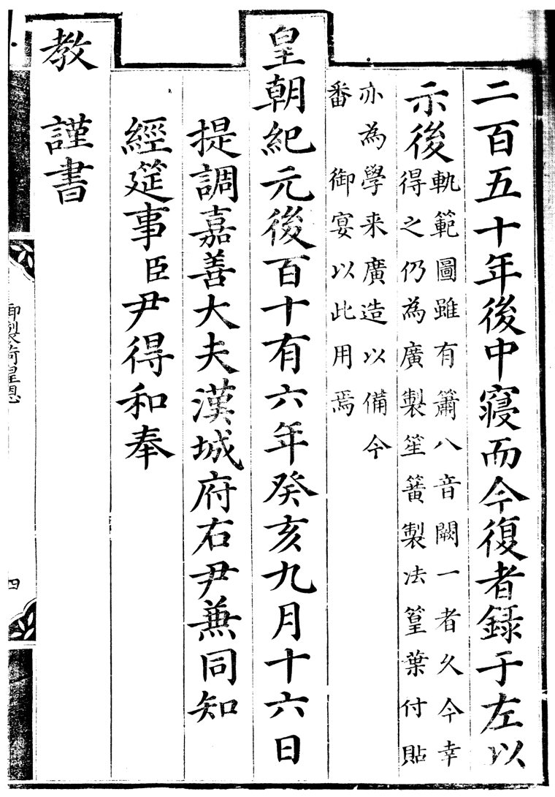
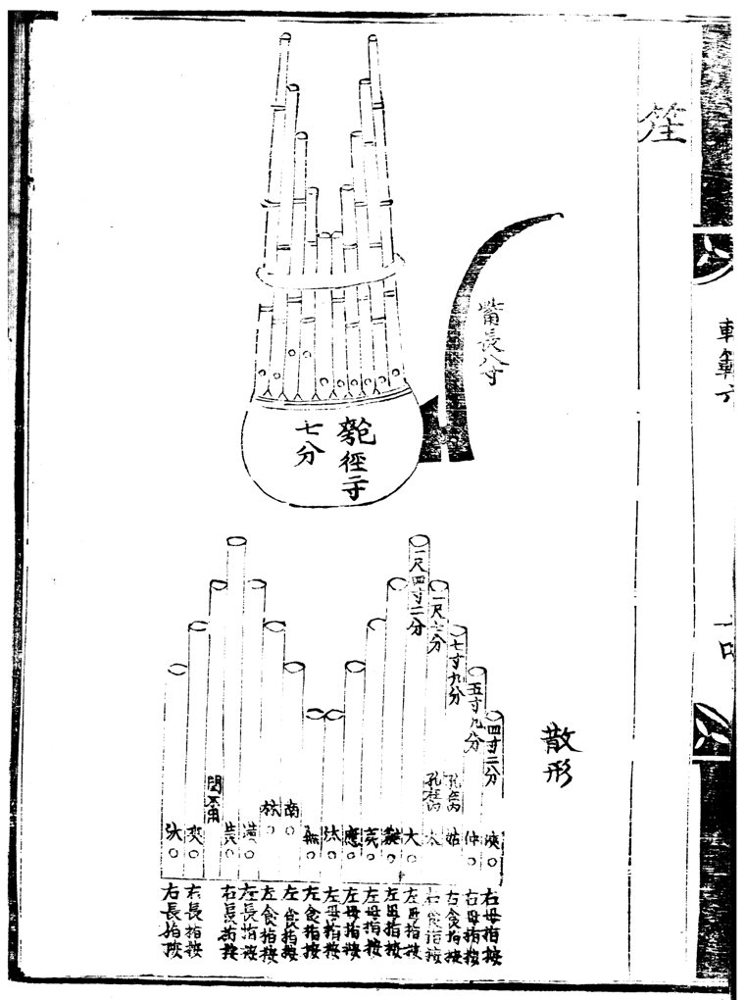

『악학궤범』 — 1493년의 악기 그림책, 그 뒤
이 면에서 보는 것. 1493년 조선 조정이 엮은 음악책 『악학궤범』에 그림과 치수로 실린 64조목(악기 58, 깃발·춤 도구 같은 의물 6)이 지금 어떻게 되었는지, 그리고 이 책이 어떻게 거듭 찍혔는지를 본다.
보이는 것. 악기 58가지에 지금의 쓰임을 하나씩 매기면, 지금도 연주 17, 문묘·종묘·사직 같은 제례에서만 쓰임 17, 지금 쓰이지 않음 14, 끊겼다가 복원 4, 확인하지 못함 6이다. 한 악기에 여러 쓰임이 겹치는 경우가 있어, 이 수는 분류한 수다.
조심할 것. 「지금 쓰이지 않음」은 언제 끊겼는지를 알려 주지 않는다.
1. 한 권의 책, 여러 번의 인쇄#
『악학궤범』은 1493년에 한 번 찍고 끝난 책이 아니다. 임진왜란 뒤 다시 새긴 판이 있고, 1655년에는 그 판목으로 찍자는 청이 받아들여졌으며, 1743년에는 앞에 글과 그림이 붙은 책이 나왔다. 그림을 인용할 때 어느 판인지 적는 이유다.
성현(成俔) 등이 왕명을 받아 엮은 이 책의 서문 끝에는 이런 날짜가 있다.
弘治六年癸丑八月上澣
(독음) 홍치육년계축팔월상한
(해석) 홍치 6년 계축년(1493) 8월 상순
지금 남은 책들의 바탕은 임진왜란 뒤인 1610년에 다시 새긴 판이다. 1933년 영인본(원본을 사진으로 찍어 그대로 다시 찍은 책) 첫째 책의 둘째 면에 그해의 내사기(內賜記: 왕이 책을 내려 준 기록)가 있고, 셋째 책 끝에는 간기(刊記: 찍은 때를 적은 기록)가 있다.
萬曆三十八年十月 日 內賜太白山樂學軌範一件
(독음) 만력삼십팔년시월 일 내사태백산악학궤범일건
(해석) 만력 38년(1610) 10월 일, 태백산 사고에 『악학궤범』 한 부를 내려 준다.
1655년에는 새로 새기지 않고, 임진왜란 뒤 새겨 장악원에 두었던 판목으로 찍자는 청이 올라와 받아들여졌다. 『효종실록』에 예조판서 이후원의 말이 남아 있다.
壬辰亂後, 掌樂院開刊, 而板本在本院。 請令校書館印出累件, 分藏史庫。
(독음) 임진란후 장악원개간 이판본재본원 청령교서관인출누건 분장사고
(해석) 임진왜란 뒤 장악원에서 판을 새겨 그 판목이 장악원에 있으니, 교서관에 명하여 여러 부를 찍어 사고에 나누어 두게 하소서.
장악원(掌樂院)은 궁중 음악을 맡은 관청, 교서관(校書館)은 책을 찍던 관청, 사고(史庫)는 실록과 귀한 책을 보관하던 서고다.
임금은 이를 따랐다(實錄은 청과 허락까지 적었고, 실제로 몇 부를 찍었는지는 적지 않았다). 같은 자리에서 그는 이 책이 「여염집에는 있지 않은 책」이며 종묘 뜰의 음악이 모두 이 제도를 쓴다고 했다.
1743년에는 영조 대의 글과 그림 18면을 책 앞에 붙여 다시 찍었다. 그 끝에 연월이 있다.
皇朝紀元後百十有六年癸亥九月十六日
(독음) 황조기원후백십유육년계해구월십육일
(해석) 황조(명)의 기원 뒤 116년, 계해년(1743) 9월 16일
「황조기원」은 명의 마지막 연호인 숭정(崇禎)의 원년(1628)을 기점으로 세는 해다. 1628년을 1년으로 세면 116년째가 1743년이다.
이 책을 1610년 판과 맞대어 보면, 앞에 붙은 18면을 빼고 세 책에서 골라 대조한 면들의 배치가 서로 대응한다. 셋째 책 끝에는 1610년의 간기 「萬曆三十八年庚戌仲秋 日」(만력 38년 경술년 중추, 곧 음력 8월)이 그대로 남아 있다.
| 때 | 무엇 | 이 면에서 본 근거 |
|---|---|---|
| 1493 | 처음 엮음 | 성현 서문의 날짜 |
| 임진왜란 이전 | 일본 나고야 호사문고(蓬左文庫) 소장본으로 알려짐 | 장서각 해제. 실물은 보지 못했다 확인 대기 |
| 1610 | 다시 새긴 판, 태백산 사고에 내림 | 내사기(1933 영인본), 간기(1743년 책 셋째 책 끝) |
| 1655 | 그 판목으로 찍어 사고에 나눠 두자는 청을 허락 | 『효종실록』 효종 6년 3월 8일 |
| 1743 | 앞에 영조 대 글·그림 18면이 붙은 책 | 계해년 기록, 면 대조(표본) |
| 경자년 | 「庚子六月日新備」(경자년 6월에 새로 갖춤)라는 묵서가 있는 둘째 책(권4~6) — 이 면에서는 「경자년 신비본」이라 부른다 | 장서각 소장본 표지 뒷면. 1610년 이후 1933년 이전으로 보면 경자년은 1660·1720·1780·1840·1900년 가운데 하나지만 어느 해인지는 알 수 없다. 「신비(新備)」는 새로 갖췄다는 기록이지 찍은 해가 아니다. 6권 56면의 배치와 주요 그림은 1610년 판과 대응한다(글자·치수 하나하나까지 교감하지는 않았다) |
| 1933 | 경성 고전간행회(古典刊行會) 영인. 판권에 「京城帝國大學御藏本(舊奎章閣本)」 — 1610년 태백산 내사기가 있는 규장각 구장본을 찍었다 | 판권(3월 25일 인쇄, 3월 28일 발행), 첫째 책 내사기 |
1743년 책과 경자년 신비본도 1610년 판목으로 찍었을 수 있지만, 확인하지는 못했다. 면 배치가 같은 것만으로는 부족하고, 판목의 갈라짐이나 획 끊김을 하나하나 견줘야 한다. 「장서각 해제」는 한국학중앙연구원 장서각이 소장 자료마다 붙인 설명글이다. 「저본」은 영인의 바탕이 된 원본이다.
2. 아홉 권의 차례 — 이론에서 그림까지#
아홉 권은 「소리의 이론 → 악대를 세우는 법 → 춤 → 그림」 순서로 놓였다. 본문 402면 가운데 악기·의물·복식 그림을 담은 6~8권이 150면이다.
『악학궤범』 권별 면 수 — 막대 하나가 한 권이다. 막대가 길수록 그 권에 지면을 많이 썼다. 진한 막대는 악기·의물 그림이 실린 권(6~8권)이다.
| 권 | 책 | 다루는 것 |
|---|---|---|
| 1 | 첫째 | 음률 이론 — 율려(12음의 높이), 60조(조의 체계), 팔음(악기를 재료 여덟 가지로 나눈 분류) |
| 2 | 첫째 | 악대 배치 — 의례마다 어떤 악기를 어디에 몇 개 놓는가 |
| 3 | 첫째 | 『고려사』 악지에 실린 고려의 정재(呈才: 궁중 잔치에서 추던 노래와 춤) |
| 4 | 둘째 | 당시 추던 당악 정재(중국에서 들어온 계통과 그 형식을 빌려 지은 춤) |
| 5 | 둘째 | 당시 추던 향악 정재(우리 고유 계통) |
| 6 | 둘째 | 아악기 그림(아부 악기 도설 — 도설은 그림과 풀이)과 제례 춤의 깃발·도구 |
| 7 | 셋째 | 당악기·향악기 그림(당부·향부 악기 도설) |
| 8 | 셋째 | 정재에 드는 의물·복식·악기 그림 |
| 9 | 셋째 | 악사·악공(연주자), 무동(춤추는 아이), 여기(여성 연희자)의 옷 |
3. 그림 속 64조목은 지금#
아악기(아부, 제례 음악의 악기) 38가지는 대부분 제례에서만 쓰이거나(17) 지금 쓰이지 않는다(12). 지금도 연주되는 것은 4가지이고, 나머지 5가지는 확인하지 못했다. 당악기·향악기 20가지 가운데서는 13가지가 지금도 연주된다.
『악학궤범』(1493)에 그림으로 실린 64조목은 지금 어떻게 쓰이나 — 칸 하나가 악기 하나(의물 6칸은 깃발·춤 도구)다. 색은 지금의 쓰임이다. 빗금 칸은 확인하지 못한 것이다. 아래 굵은 점선 8칸은 64 셈법 밖의 악기로 따로 붙였다.
- 초록 · 지금도 연주 17
- 파랑 · 제례에서만 쓰임 17
- 황토색 · 끊겼다가 복원 4
- 회색 · 지금 쓰이지 않음 14
- 옅은 갈색 · 의물(악기 아님) 6
- 빗금 · 확인 못 함(국악사전 항목 없음 포함) 6
- 굵은 점선 · 64 밖 · 상태 미조사 8
아부 — 아악기 (6권) 38
- 編鐘편종
- 編磬편경
- 節鼓절고
- 笙생
- 特鐘특종
- 特磬특경
- 靈鼓영고
- 靈鼗영도
- 路鼓노고
- 路鼗노도
- 晉鼓진고
- 柷축
- 敔어
- 籥약
- 簫소
- 篴적
- 篪지
- 缶부
- 壎훈
- 瑟슬
- 琴금
- 朔鼓삭고
- 應鼓응고
- 雷鼓뇌고
- 雷鼗뇌도
- 應응
- 雅아
- 相상
- 牘독
- 錞순
- 鐲탁
- 鐃요
- 鐸탁
- 建鼓건고
- 鼗도
- 管관
- 竽우
- 和화
당부 — 당악기 (7권) 13
- 方響방향
- 杖鼓장고
- 拍박
- 奚琴해금
- 牙箏아쟁
- 洞簫퉁소
- 唐觱篥당피리
- 太平簫태평소
- 月琴월금
- 唐琵琶당비파
- 大箏대쟁
- 唐笛당적
- 敎坊鼓교방고
향부 — 향악기 (7권) 7
- 玄琴현금
- 伽倻琴가야금
- 大笒대금
- 鄕觱篥향피리
- 草笛초적
- 鄕琵琶향비파
- 小管子소관자
의물 — 깃발·춤 도구 (6권) 6
- 旌정
- 纛둑
- 麾휘
- 羽籥우약
- 干戚간척
- 照燭조촉
8권 정재·군례 악기 — 64 셈법 밖 8
- 牙拍아박
- 響鈸향발
- 舞鼓무고
- 銅鈸동발
- 大角대각
- 螺나
- 大鼓대고
- 大金대금
몇 가지로 세는가. 64는 오지혜(2019)의 셈법이다: 아부 38, 당부 13, 향부 7, 의물 6. 8권에는 이 셈에 들지 않는 악기 그림이 더 있다. 아박·향발·무고·동발, 대각·나·대고·대금 8조목을 골라 점선 칸으로 따로 붙였다(대고에 딸린 소고, 대금에 딸린 소금은 한 조목으로 묶었다). 여기의 대금(大金)은 징, 소금(小金)은 꽹과리 계통의 쇠 악기로, 7권의 관악기 대금(大笒)과는 다른 악기다. 무엇을 「한 가지」로 세느냐에 따라 수가 달라진다.
목록과 본문. 깃발 정(旌)은 6권 목록에서 빠졌지만 본문에는 그림이 있다. 공후(箜篌)는 악기 도설의 목록에도 그림 조목에도 없다(4절).
4. 세 개의 시계 — 문서가 정한 때, 만들어진 때, 쓰이게 된 때#
1493년 책에 그림이 있다고 그 악기가 그때부터 줄곧 연주된 것은 아니고, 책에 없다고 그 악기가 없었던 것도 아니다. 『악학궤범』과 그 앞뒤 기록이 이 어긋남을 보여 준다.
그림 속 악기를 250년 뒤에 다시 만들다. 1743년 판 앞에 붙은 글은 이렇게 맺는다.
二百五十年後中寢而今復者錄于左以示後
(독음) 이백오십년후중침이금복자록우좌이시후
(해석) 250년 뒤 중간에 끊겼다가 이제 되살린 것을 왼쪽에 적어 뒤에 보인다.
이어지는 작은 글씨는 이렇다.
軌範圖雖有簫八音闕一者久今幸得之仍爲廣製 笙簧製法簧葉付貼亦爲學來廣造以備今番御宴以此用焉
(독음) 궤범도수유소팔음궐일자구금행득지잉위광제 생황제법황엽부첩역위학래광조이비금번어연이차용언
(해석) 『궤범』의 그림에 소(簫)는 있으나 팔음 가운데 하나가 빠진 지 오래였는데, 이제 다행히 얻어 널리 만들었다. 생황을 만드는 법과 혀(簧葉: 관 아래쪽에 붙여 떨려 소리를 내는 얇은 금속판)를 붙이는 법도 배워 와서 널리 만들어 갖추고, 이번 어연(임금이 베푼 잔치)에 이것을 쓴다.


팔음 가운데 박(匏) 소리를 내는 악기가 생황이다. 생황 만드는 법을 배워 와 1743년 어연에 썼다는 기록이다. (앞 구절 「雖有簫」를 어떻게 끊어 읽을지는 해석을 유보한다. 위 해석은 한 가지 읽기다.)
책에 없는 악기. 하프 계통의 현악기인 공후(箜篌)는 『악학궤범』 악기 도설(6~8권)의 목록과 그림 조목에 없다. 그런데 그보다 약 380년 앞선 기록에는 있다. 『고려사』 악지의 「송에서 새로 내린 악기(宋新賜樂器)」 조에 따르면, 예종 9년(1114) 6월 송 휘종이 보낸 새 음악의 악기 목록에 공후가 들어 있다.
箜篌四座, 並縷金.
(독음) 공후사좌 병루금
(해석) 공후 네 대(座는 악기를 세는 단위), 모두 금으로 꾸몄다.
1114년 고려에 들어온 악기가 1493년 조선 악기 그림책의 도설 조목에는 보이지 않는다. 그 사이 어디서 쓰임이 끊겼는지는 이 두 기록만으로는 알 수 없다. 국사편찬위원회 공공데이터로 받은 『조선왕조실록』 원문에서 「箜篌」를 찾아도 나오지 않는다.
같은 그림, 다른 찍음. 6권을 1610년 판과 경자년 신비본으로 면마다 맞대어 보면 56면의 배치와 주요 그림이 대응한다. 눈에 띄는 차이는 슬(瑟) 앞판 그림이다. 1610년 판을 찍은 1933년 영인본에는 구름·학 무늬 위로 줄이 촘촘히 지나가는데, 1743년 책에서는 그 줄이 흐리게 끊겨 보이고, 경자년 신비본에서는 대부분 보이지 않는다. 판목이 닳은 것인지, 고쳐 새긴 것인지, 찍을 때 먹이 덜 묻은 것인지는 아직 가리지 못했다.

이 절의 「끊겼다」 「되살렸다」는 책이 그렇게 적었다는 뜻이다. 실제로 연주가 언제 멈추고 언제 다시 시작되었는지는 다른 기록으로 따로 확인해야 한다.
정리#
『악학궤범』은 1493년의 악기 58가지와 의물 6가지를 그림과 치수로 남겼고, 지금 전하는 책들은 1610년 간기를 가진 판과 그 뒤의 인본·영인본이다. 그림 속 악기 가운데 17가지가 지금도 연주되지만, 아악기 대부분은 제례에만 남거나 쓰이지 않는다. 그리고 책에 그림이 있다는 것과 악기가 실제로 쓰였다는 것은 다른 이야기다.
자료와 방법#
- 원판 면: 국립중앙도서관 소장 목판본(1743 판) 天·地·人 3책(원문 뷰어 「저작권유형: 이용 제한이 없습니다」), 고전간행회 1933 영인본(1610 판 저본; 국립중앙도서관·한국학중앙연구원 장서각 소장본), 장서각 소장 경자년 신비본 地책(K3-588). 장서각 자료는 「한국학중앙연구원 장서각 소장 자료」.
- 64조목과 지금 상태: 오지혜(2019), 『한국학』 42(2)의 조목 구분; 지금 상태는 국립국악원 국악사전 항목(2026-11-19 조회).
- 『고려사』·『조선왕조실록』: 국사편찬위원회 공공데이터(원문).
- 한문 해석은 이 면의 작성자가 직접 옮겼다. 판독이 어려운 글자, 그리고 이 면의 주장 가운데 출처표에 올린 것과 지정한 표본 면은 다른 AI 모델(Codex)이 원자료와 따로 대조했고, 그 지적을 반영해 고쳤다.
- 「지금 상태」 분류는 국악사전 문구를 이 면이 한 칸 한 색으로 줄인 것이다. 사직 제례 편성, 진설만 하는 악기, 복원 뒤 다시 연주되는 악기처럼 겹치는 경우가 있어, 칸마다 국악사전 문구에서 가장 두드러진 쓰임 하나를 골라 색을 정했다. 그래서 색은 대략의 구분이며, 칸에 마우스를 올리면 세부 한정이 보인다.